Linear Model Selection and Regularization
Introduction: Beyond Simple Linear Regression
Last time, we explored the fundamentals of linear regression, a powerful tool for modeling relationships between variables.
However, the simple linear model, while interpretable and often effective, has limitations. In this chapter, we extend the linear model. We will discuss:
- Ways in which the simple linear model can be improved.
- Alternative fitting procedures instead of least squares.
The Goals:
- Better Prediction Accuracy 💪
- Improved Model Interpretability 🧐
Why Go Beyond Least Squares?
Let’s recall our standard linear model:
\[ Y = \beta_0 + \beta_1X_1 + ... + \beta_pX_p + \epsilon \] (eq: 6.1)
We usually use Least Squares to fit this model.
Linear model has distinct advantages in terms of inference and competitive in relation to non-linear methods.
But, plain Least Squares has some limitations.
When do we need to use another fitting procedure instead of least squares?
Limitations of Least Squares: Prediction Accuracy
Low Bias, Low Variance (Ideal): When the true relationship is approximately linear and you have many more observations (n) than predictors (p) (\(n \gg p\)), least squares works great! The estimates have low bias and low variance.
High Variance (Problem): If n is not much larger than p, the least squares fit can have high variability. This leads to overfitting 🤯 - the model fits the training data too closely and performs poorly on new data.
No Unique Solution (Big Problem): If p > n (more predictors than observations), there’s no longer a unique least squares solution! Many possible coefficient values will fit perfectly, leading to huge variance and terrible predictions.
Overfitting: A model that fits the training data too well, capturing noise and random fluctuations rather than the true underlying relationship. It won’t generalize well to new data.
Limitations of Least Squares: Model Interpretability
Irrelevant Variables: Often, some predictors in your model aren’t actually related to the response. Including them adds unnecessary complexity. We’d like to remove these irrelevant variables.
Least Squares Doesn’t Zero Out: Least squares rarely sets coefficients exactly to zero. This makes it hard to identify the truly important variables.
Feature/Variable Selection: We want methods that automatically perform feature selection (or variable selection) – excluding irrelevant variables to create a simpler, more interpretable model.
A model with fewer, carefully selected variables is often easier to understand and explain. It highlights the key drivers of the response.
Three Classes of Methods
To address these limitations, we explore three main classes of methods that offer alternatives to least squares:
Subset Selection: Identify a subset of the p predictors that are most related to the response. Fit a model using least squares on this reduced set of variables.
Shrinkage (Regularization): Fit a model with all p predictors, but shrink the estimated coefficients towards zero. This reduces variance. Some methods (like the lasso) can even set coefficients exactly to zero, performing variable selection.
Dimension Reduction: Project the p predictors into an M-dimensional subspace (M < p). This means creating M linear combinations (projections) of the original variables. Use these projections as predictors in a least squares model.
1. Subset Selection
We will introduce several methods to select subsets of predictors. Here we consider best subset and stepwise model selection procedures.
1.1 Best Subset Selection
The Idea: Fit a separate least squares regression for every possible combination of the p predictors. Then, choose the “best” model from this set.
Exhaustive Search: If you have p predictors, you have 2p possible models! (e.g., 10 predictors = 1,024 models; 20 predictors = over 1 million models!)
Best Subset Selection Algorithm
Algorithm 6.1 Best subset selection
Null Model (M0): A model with no predictors. It simply predicts the sample mean of the response for all observations.
For k = 1, 2, …, p: (where k is the number of predictors)
- Fit all \(\binom{p}{k}\) models that contain exactly k predictors.
- Pick the “best” model among these \(\binom{p}{k}\) models, and call it Mk. “Best” is defined as having the smallest Residual Sum of Squares (RSS) or, equivalently, the largest R2.
Select the ultimate best model: From the models M0, M1, …, Mp, choose the single best model using:
- Validation set error
- Cross-validation error
- Cp (AIC)
- BIC
- Adjusted R2 ## Best Subset Selection: Illustration
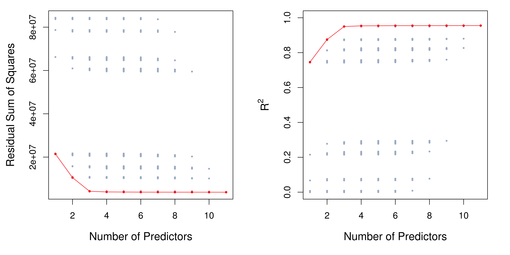
Figure 6.1: Shows RSS and R2 for all possible models on the Credit dataset.
The data contains ten predictors, but the x-axis ranges to 11. The reason is that one of the predictors is categorical, taking three values. It is split up into two dummy variables.
The red line connects the best models for each size (lowest RSS or highest R2).
As expected, RSS decreases and R2 increases as more variables are added. However, the improvements become very small after just a few variables.
Best Subset Selection: Choosing the Best Model
The RSS of these p + 1 models decreases monotonically, and the R² increases monotonically, as the number of features included in the models increases. So we can’t use them to select the best model!
Training Error vs. Test Error: Low RSS and high R2 indicate a good fit to the training data. But we want a model that performs well on new, unseen data (low test error). Training error is often much smaller than test error!
Need a Different Criterion: We can’t use RSS or R2 directly to select the best model. We need to estimate the test error.
Best Subset Selection: Computational Limitations
- Exponential Growth: The number of possible models (2p) grows very quickly as p increases.
- Infeasible for Large p: Best subset selection becomes computationally infeasible for even moderately large values of p (e.g., p > 40).
- Statistical Problems (Large p): With a huge search space, there’s a higher chance of finding models that fit the training data well by chance, even if they have no real predictive power. This leads to overfitting and high variance in the coefficient estimates.
1.2 Stepwise Selection
Best subset selection is often computationally infeasible for large p. Thus, stepwise methods are attractive alternatives.
- Stepwise methods explore a far more restricted set of models.
1.2.1 Forward Stepwise Selection
- The Idea: Start with the null model (no predictors). Add predictors one-at-a-time, always choosing the variable that gives the greatest additional improvement to the fit.
Algorithm 6.2 Forward stepwise selection
Null Model (M0): Start with the model containing no predictors.
For k = 0, 1, …, p-1:
- Consider all p - k models that add one additional predictor to the current model (Mk).
- Choose the “best” of these p - k models (smallest RSS or highest R2), and call it Mk+1.
Select the ultimate best model: Choose the single best model from M0, M1, …, Mp using validation set error, cross-validation, Cp, BIC, or adjusted R2.
Forward Stepwise Selection: Computational Advantage
- Much Fewer Models: Forward stepwise selection considers many fewer models than best subset selection.
- Best subset: 2p models.
- Forward stepwise: 1 + p(p+1)/2 models.
- Example: If p = 20, best subset considers over 1 million models, while forward stepwise considers only 211.
- Computational Efficiency: This makes forward stepwise selection computationally feasible for much larger values of p.
Forward Stepwise Selection: Limitations
Not Guaranteed Optimal: Forward stepwise selection is not guaranteed to find the best possible model out of all 2p possibilities. It’s a greedy algorithm – it makes the locally optimal choice at each step, which may not lead to the globally optimal solution.
Example:
- Suppose the best 1-variable model contains X1.
- The best 2-variable model might contain X2 and X3.
- Forward stepwise won’t find this, because it must keep X1 in the 2-variable model.
Forward Stepwise Selection vs. Best Subset Selection: An Example
| # Variables | Best Subset | Forward Stepwise |
|---|---|---|
| One | rating | rating |
| Two | rating, income | rating, income |
| Three | rating, income, student | rating, income, student |
| Four | cards, income, student, limit | rating, income, student, limit |
- The first three models selected are identical.
- The fourth models differ.
- But in this example, the four-variable models perform very similarly (see Figure 6.1), so the difference isn’t crucial.
Forward Stepwise in High Dimensions
n < p Case: Forward stepwise selection can be used even when n < p (more predictors than observations).
Limitation: In this case, you can only build models up to size Mn-1, because least squares can’t fit a unique solution when p ≥ n.
1.2.2 Backward Stepwise Selection
- The Idea: Start with the full model (all p predictors). Remove the least useful predictor one-at-a-time.
Algorithm 6.3 Backward stepwise selection
Full Model (Mp): Begin with the model containing all p predictors.
For k = p, p-1, …, 1:
- Consider all k models that remove one predictor from the current model (Mk).
- Choose the “best” of these k models (smallest RSS or highest R2), and call it Mk-1.
Select the ultimate best model: Select the single best model from M0, …, Mp using validation set error, cross-validation, Cp, BIC, or adjusted R2.
Backward Stepwise Selection: Properties
Computational Advantage: Like forward stepwise, backward stepwise considers only 1 + p(p+1)/2 models, making it computationally efficient.
Not Guaranteed Optimal: Like forward stepwise, it’s not guaranteed to find the best possible model.
Requirement: n > p: Backward stepwise selection requires that n > p (more observations than predictors) so that the full model can be fit.
Forward stepwise can be used even when n < p, and so is the only viable subset method when p is very large.
1.2.3 Hybrid Approaches
- Combine Forward and Backward: Hybrid methods combine aspects of forward and backward stepwise selection.
- Add and Remove: Variables are added sequentially (like forward). But, after adding each new variable, the method may also remove any variables that no longer contribute significantly to the model fit.
- Goal: Try to mimic best subset selection while retaining the computational advantages of stepwise methods.
1.3 Choosing the Optimal Model
Best subset selection, forward selection, and backward selection result in the creation of a set of models, each of which contains a subset of the p predictors.
The Challenge: How do we choose the best model from among the set of models generated by subset selection or stepwise selection? We cannot simply use the model that has the smallest RSS and the largest R2!
Need to Estimate Test Error: We need to estimate the test error of each model.
Two Main Approaches:
- Indirectly Estimate Test Error: Adjust the training error to account for the bias due to overfitting.
- Directly Estimate Test Error: Use a validation set or cross-validation.
Indirectly Estimating Test Error: Cp, AIC, BIC, Adjusted R2
Training Error is Deceptive: The training set MSE (RSS/n) generally underestimates the test MSE. This is because least squares specifically minimizes the training RSS.
Adjusting for Model Size: We need to adjust the training error to account for the fact that it tends to be too optimistic. Several techniques do this:
- Cp
- Akaike Information Criterion (AIC)
- Bayesian Information Criterion (BIC)
- Adjusted R2
Cp, AIC, BIC, Adjusted R2: Formulas
For a least squares model with d predictors, these statistics are computed as:
- Cp: \[
C_p = \frac{1}{n}(RSS + 2d\hat{\sigma}^2)
\] (eq: 6.2)
- \(\hat{\sigma}^2\) is an estimate of the error variance.
- Adds a penalty proportional to the number of predictors.
- AIC: \[
AIC = \frac{1}{n}(RSS + 2d\hat{\sigma}^2)
\]
- For linear model with Gaussian errors, AIC is proportional to Cp.
- BIC: \[
BIC = \frac{1}{n}(RSS + log(n)d\hat{\sigma}^2)
\] (eq: 6.3)
- Similar to Cp, but the penalty for the number of predictors is multiplied by log(n).
- Since log(n) > 2 for n > 7, BIC generally penalizes models with more variables more heavily than Cp, leading to the selection of smaller models.
- Adjusted R2: \[ Adjusted \ R^2 = 1 - \frac{RSS/(n - d - 1)}{TSS/(n-1)} \] (eq: 6.4)
- Maximizing the adjusted R² is equivalent to minimizing \(\frac{RSS}{n-d-1}\).
Cp, AIC, BIC, Adjusted R2: Interpretation
Low Values are Good (Cp, AIC, BIC): For Cp, AIC, and BIC, we choose the model with the lowest value.
High Values are Good (Adjusted R2): For adjusted R2, we choose the model with the highest value.
Theoretical Justification: Cp, AIC, and BIC have theoretical justifications (though they rely on assumptions that may not always hold). Adjusted R2 is more intuitive but less theoretically grounded.
Cp, AIC, BIC, Adjusted R2: Example
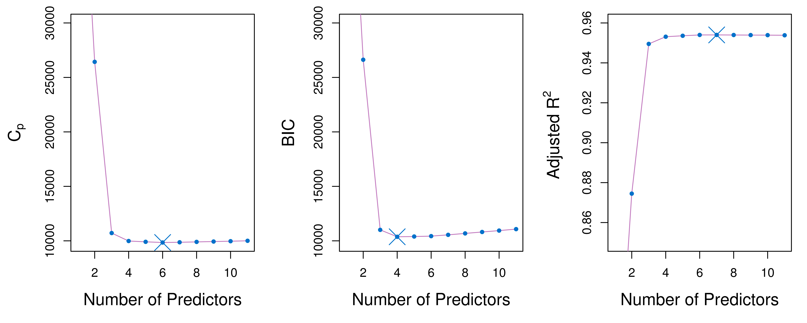
Figure 6.2: Shows these statistics for the Credit dataset.
Cp and BIC are estimates of test MSE.
BIC selects a model with 4 variables (income, limit, cards, student).
Cp selects a 6-variable model.
Adjusted R2 selects a 7-variable model.
Directly Estimating Test Error: Validation and Cross-Validation
- Direct Estimation: Instead of adjusting the training error, we can directly estimate the test error using:
- Validation set approach
- Cross-validation approach
- Advantages:
- Provide a direct estimate of the test error.
- Make fewer assumptions about the true underlying model.
- Can be used in a wider range of model selection tasks.
- Computational Cost: Historically, cross-validation was computationally expensive. Now, with fast computers, this is less of a concern.
Validation and Cross-Validation: Example
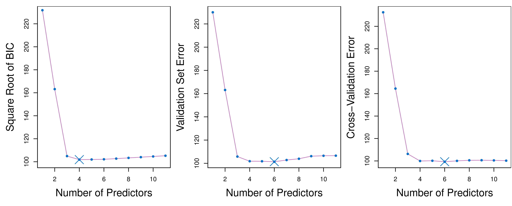
- Figure 6.3: Shows BIC, validation set error, and cross-validation error for the Credit data.
- Validation and cross-validation both select a 6-variable model.
- All three approaches suggest that models with 4, 5, or 6 variables are quite similar.
- One-Standard-Error Rule: A practical rule for choosing among models with similar estimated test error.
- Calculate the standard error of the estimated test MSE for each model size.
- Select the smallest model for which the estimated test error is within one standard error of the lowest point on the curve.
- Rationale: Choose the simplest model among those that perform comparably.
- Apply to this example, we may choose the three-variable model.
2. Shrinkage Methods
Alternative to Subset Selection: Instead of selecting a subset of variables, shrinkage methods (also called regularization methods) fit a model with all p predictors, but constrain or regularize the coefficient estimates.
How it Works: Shrinkage methods shrink the coefficient estimates towards zero.
Why Shrink?: Shrinking the coefficients can significantly reduce their variance.
Two Main Techniques:
- Ridge regression
- Lasso
2.1 Ridge Regression
- Recall Least Squares: Least squares minimizes the Residual Sum of Squares (RSS):
\[ RSS = \sum_{i=1}^{n}(y_i - \beta_0 - \sum_{j=1}^{p}\beta_jx_{ij})^2 \]
- Ridge Regression: Ridge regression minimizes a slightly different quantity:
\[ \sum_{i=1}^{n}(y_i - \beta_0 - \sum_{j=1}^{p}\beta_jx_{ij})^2 + \lambda\sum_{j=1}^{p}\beta_j^2 = RSS + \lambda\sum_{j=1}^{p}\beta_j^2 \] (eq: 6.5)
- λ (Tuning Parameter): λ ≥ 0 is a tuning parameter that controls the amount of shrinkage.
Ridge Regression: The Shrinkage Penalty
\[ \sum_{i=1}^{n}(y_i - \beta_0 - \sum_{j=1}^{p}\beta_jx_{ij})^2 + \lambda\sum_{j=1}^{p}\beta_j^2 = RSS + \lambda\sum_{j=1}^{p}\beta_j^2 \]
- Two Parts:
- RSS: Measures how well the model fits the data.
- Shrinkage Penalty (λΣβj2): Penalizes large coefficients. This term is small when β1, …, βp are close to zero.
- Tuning Parameter (λ):
- λ = 0: No penalty. Ridge regression is the same as least squares.
- λ → ∞: Coefficients are shrunk all the way to zero (null model).
- 0 < λ < ∞: Controls the trade-off between fitting the data well and shrinking the coefficients.
Ridge Regression: The Intercept
No Shrinkage on Intercept: Notice that the shrinkage penalty is not applied to the intercept (β0).
Why?: We want to shrink the coefficients of the predictors, but not the intercept, which represents the average value of the response when all predictors are zero.
Centering Predictors: If the predictors are centered (mean of zero) before performing ridge regression, then the estimated intercept will be the sample mean of the response: \(\hat{\beta}_0 = \bar{y}\).
Ridge Regression: Example on Credit Data
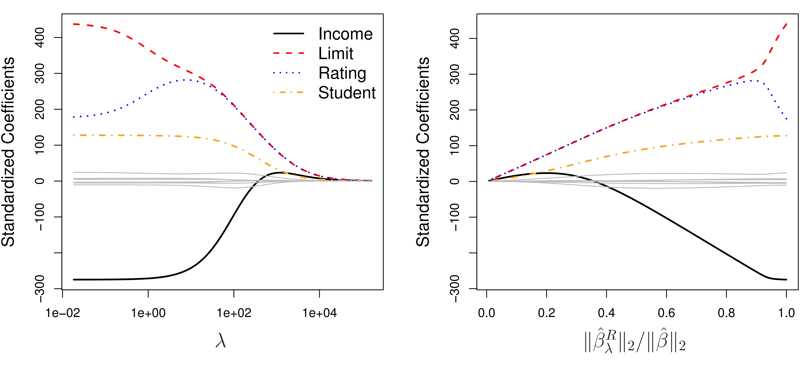
- Figure 6.4: Shows ridge regression coefficient estimates for the Credit data.
- Left Panel: Coefficients plotted against λ.
- λ = 0: Coefficients are the same as least squares.
- As λ increases, coefficients shrink towards zero.
- Right Panel: Coefficients plotted against ||βλR||2 / ||β||2
- The x-axis can be seen as how much the ridge regression coefficient estimates have been shrunken towards zero.
Ridge Regression: Standardization
Scale Equivariance (Least Squares): Least squares coefficient estimates are scale equivariant. Multiplying a predictor by a constant c simply scales the corresponding coefficient by 1/c.
Scale Dependence (Ridge Regression): Ridge regression coefficients can change substantially when multiplying a predictor by a constant. This is because of the Σβj2 term in the penalty.
Standardization: It’s best to apply ridge regression after standardizing the predictors:
\[ \tilde{x}_{ij} = \frac{x_{ij}}{\sqrt{\frac{1}{n}\sum_{i=1}^{n}(x_{ij}-\bar{x}_j)^2}} \] (eq: 6.6)
- This ensures that all predictors are on the same scale.
Why Does Ridge Regression Improve Over Least Squares?
Bias-Variance Trade-Off: Ridge regression’s advantage comes from the bias-variance trade-off.
- As λ increases:
- Flexibility of the model decreases.
- Variance decreases.
- Bias increases.
- As λ increases:
Finding the Sweet Spot: The goal is to find a value of λ that reduces variance more than it increases bias, leading to a lower test MSE.
Ridge Regression: Bias-Variance Trade-Off Illustrated
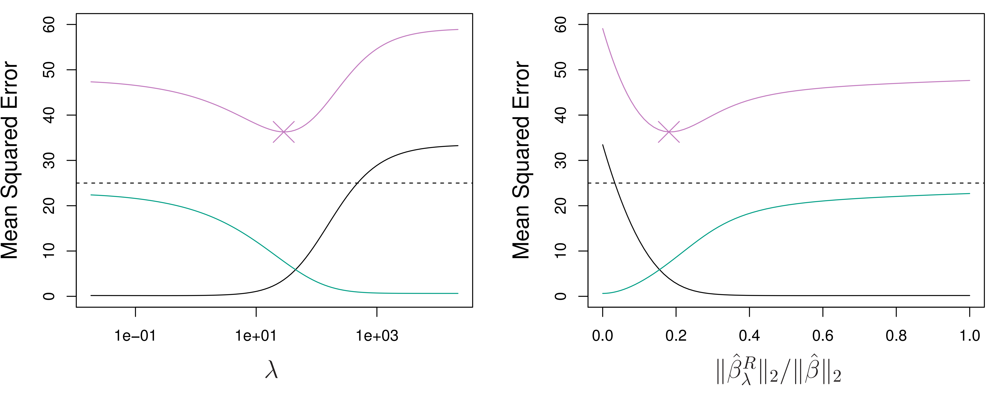
Figure 6.5: Shows bias, variance, and test MSE for ridge regression on a simulated dataset.
As λ increases, variance decreases rapidly at first, with only a small increase in bias. This leads to a decrease in MSE.
Eventually, the decrease in variance slows, and the increase in bias accelerates, causing the MSE to increase.
The minimum MSE is achieved at a moderate value of λ.
When Does Ridge Regression Work Well?
- High Variance in Least Squares: Ridge regression works best in situations where the least squares estimates have high variance. This often happens when:
- n is not much larger than p.
- p is close to n.
- p > n (though least squares doesn’t have a unique solution in this case).
- Computational Advantage: Ridge regression is also computationally efficient, even for large p.
2.2 The Lasso
Disadvantage of Ridge Regression: Ridge regression includes all p predictors in the final model. The penalty shrinks coefficients towards zero, but it doesn’t set any of them exactly to zero (unless λ = ∞). This can make interpretation difficult when p is large.
The Lasso: An Alternative: The lasso is a more recent alternative to ridge regression that overcomes this disadvantage.
Lasso Penalty: The lasso uses a different penalty term:
\[ \sum_{i=1}^{n}(y_i - \beta_0 - \sum_{j=1}^{p}\beta_jx_{ij})^2 + \lambda\sum_{j=1}^{p}|\beta_j| = RSS + \lambda\sum_{j=1}^{p}|\beta_j| \] (eq: 6.7)
- Absolute Value Penalty: The lasso uses an l1 penalty (absolute value of coefficients) instead of an l2 penalty (squared coefficients).
The Lasso: Variable Selection
Shrinkage and Selection: Like ridge regression, the lasso shrinks coefficients towards zero.
Key Difference: The l1 penalty has the effect of forcing some coefficients to be exactly zero when λ is sufficiently large.
Variable Selection: This means the lasso performs variable selection!
Sparse Models: The lasso yields sparse models – models that involve only a subset of the variables.
The Lasso: Example on Credit Data
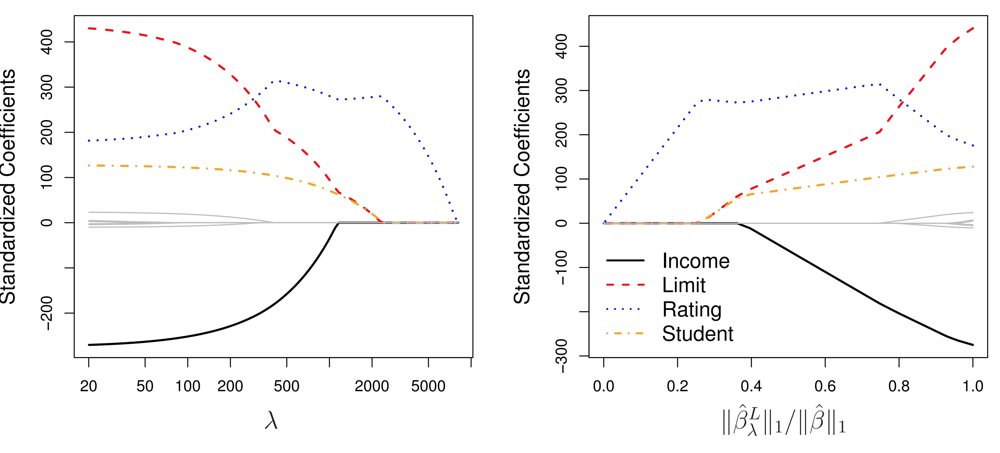
Figure 6.6: Shows lasso coefficient estimates for the Credit data.
As λ increases, coefficients shrink towards zero. But unlike ridge regression, some coefficients are set exactly to zero.
This leads to a simpler, more interpretable model.
Another Formulation for Ridge Regression and the Lasso
- Both ridge regression and the lasso can be formulated as constrained optimization problems.
- Ridge Regression: \[ \underset{\beta}{minimize} \left\{ \sum_{i=1}^{n}(y_i - \beta_0 - \sum_{j=1}^{p}\beta_jx_{ij})^2 \right\} \quad subject \ to \ \sum_{j=1}^{p}\beta_j^2 \le s \] (eq: 6.9)
- Lasso: \[ \underset{\beta}{minimize} \left\{ \sum_{i=1}^{n}(y_i - \beta_0 - \sum_{j=1}^{p}\beta_jx_{ij})^2 \right\} \quad subject \ to \ \sum_{j=1}^{p}|\beta_j| \le s \] (eq: 6.8)
- The above formulations reveal a close connection between the lasso, ridge regression, and best subset selection.
The Variable Selection Property of the Lasso
- Why does the lasso set coefficients to zero, while ridge regression doesn’t?
- Consider the constraint regions (where the solution must lie):
- Ridge regression: A circle (l2 constraint).
- Lasso: A diamond (l1 constraint).
- Consider the constraint regions (where the solution must lie):
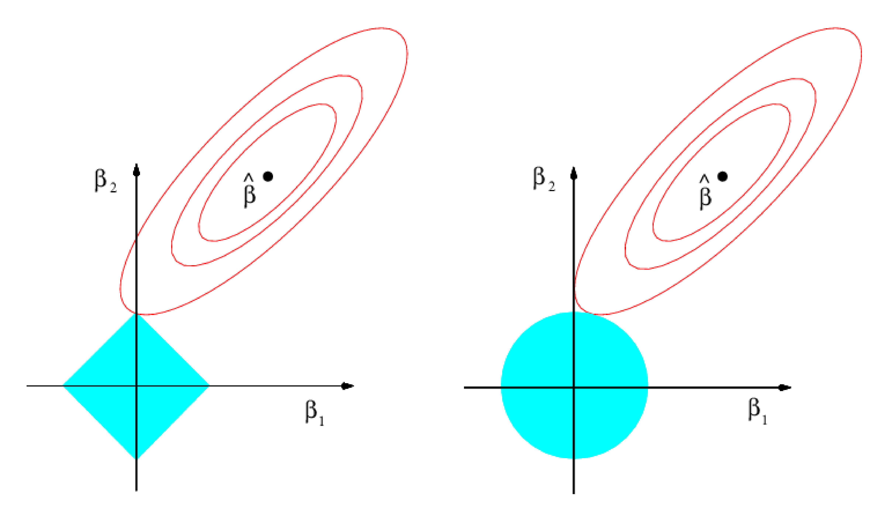
- The solution is the first point where the “ellipse” (contour of constant RSS) touches the constraint region.
- Because the lasso constraint has corners, the ellipse often intersects at an axis, setting one coefficient to zero.
- Ridge regression’s circular constraint doesn’t have corners, so this rarely happens.
Comparing the Lasso and Ridge Regression
Interpretability: The lasso has a major advantage in terms of interpretability, producing simpler models with fewer variables.
Prediction Accuracy: Which method is better for prediction depends on the true underlying relationship between the predictors and the response.
- Few Important Predictors: If only a few predictors are truly important (with large coefficients), the lasso tends to perform better.
- Many Important Predictors: If many predictors have small or moderate-sized coefficients, ridge regression tends to perform better.
Unknown Truth: In practice, we don’t know which scenario is true. Cross-validation can help us choose the best approach for a particular dataset.
Comparing the Lasso and Ridge Regression: Simulated Examples
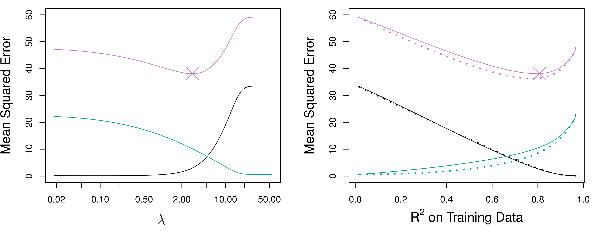
- Figure 6.8: All 45 predictors are related to the response.
- Ridge regression slightly outperforms the lasso.
- The minimum MSE of ridge regression is slightly smaller than that of the lasso.
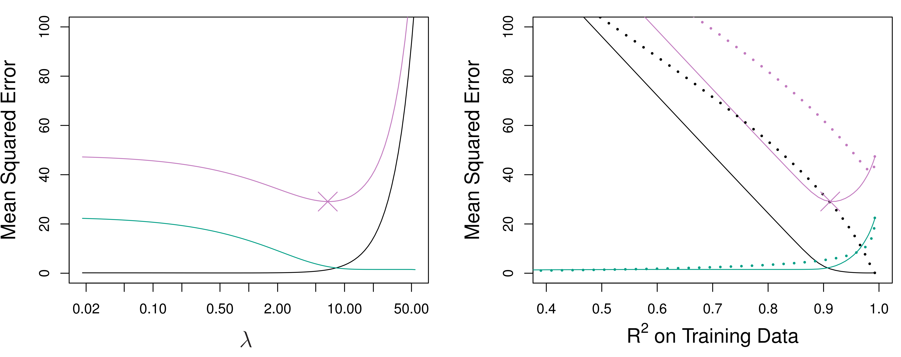
- Figure 6.9: Only 2 of 45 predictors are related to the response.
- The lasso tends to outperform ridge regression.
A Simple Special Case for Ridge Regression and the Lasso
We consider a simple situation: - \(n=p\). - \(\mathbf{X}\) is a diagonal matrix with 1’s on the diagonal. - No intercept. Then, it can be shown: - Ridge regression shrinks each least squares coefficient estimate by the same proportion. \[ \hat{\beta}_j^R = y_j / (1 + \lambda) \] (eq: 6.14) - Lasso soft-threshold the least squares coefficient estimates. \[ \hat{\beta}_j^L = \begin{cases} y_j - \lambda/2 & \text{if } y_j > \lambda/2 \\ y_j + \lambda/2 & \text{if } y_j < -\lambda/2 \\ 0 & \text{if } |y_j| \le \lambda/2 \end{cases} \] (eq: 6.15)
A Simple Special Case for Ridge Regression and the Lasso
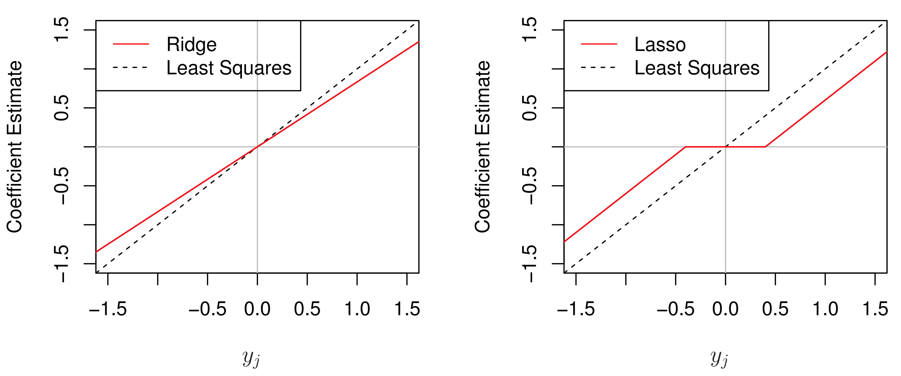
Figure 6.10: It shows that:
Ridge regression shrinks each coefficient by same proportion.
Lasso shrinks all coefficients toward zero by a similar amount, and sufficiently small coefficients are shrunken all the way to zero.
2.3 Selecting the Tuning Parameter
- Crucial Choice: Just like with subset selection, we need to choose the tuning parameter (λ) for ridge regression and the lasso.
- Cross-Validation: Cross-validation is a powerful method for selecting λ.
- Choose a grid of λ values.
- Compute the cross-validation error for each value of λ.
- Select the λ that gives the smallest cross-validation error.
- Re-fit the model using all of the data with the chosen λ.
Selecting λ: Example for Ridge Regression
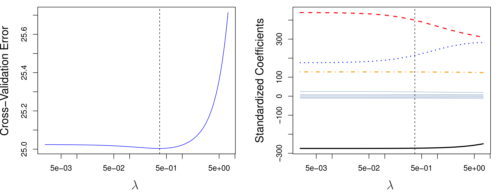
- Figure 6.12: Shows cross-validation for ridge regression on the Credit data.
- The optimal λ is relatively small, indicating a small amount of shrinkage.
- The cross-validation error curve is quite flat, suggesting that a range of λ values would work similarly well.
Selecting λ: Example for Lasso
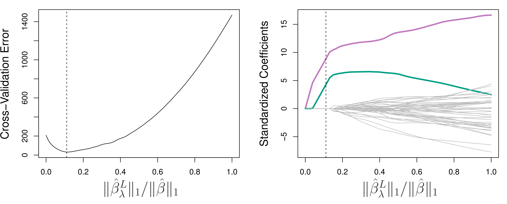
- Figure 6.13: Shows cross-validation for the lasso on the simulated data from Figure 6.9 (where only two predictors are truly related to the response).
- The lasso correctly identifies the two signal variables (colored lines) and sets the coefficients of the noise variables (gray lines) to near zero.
- The minimum cross-validation error occurs when only the signal variables have non-zero coefficients.
3. Dimension Reduction Methods
Different Approach: Instead of working directly with the original predictors (X1, …, Xp), dimension reduction methods transform the predictors and then fit a least squares model using the transformed variables.
Linear Combinations: Create M linear combinations (Z1, …, ZM) of the original p predictors, where M < p.
\[ Z_m = \sum_{j=1}^{p}\phi_{jm}X_j \] (eq: 6.16)
- φ<sub>jm</sub> are constants.- Reduced Dimension: Fit a linear regression model using Z1, …, ZM as predictors:
\[ y_i = \theta_0 + \sum_{m=1}^{M}\theta_mz_{im} + \epsilon_i \] (eq: 6.17)
- This reduces the problem from estimating *p*+1 coefficients to estimating *M*+1 coefficients.Dimension Reduction: Why it Works
- Constraint: The coefficients in the dimension-reduced model are constrained by the linear combinations:
\[ \beta_j = \sum_{m=1}^{M}\theta_m\phi_{jm} \] (eq: 6.18)
Bias-Variance Trade-Off: This constraint can introduce bias, but if p is large relative to n, choosing M << p can significantly reduce the variance of the fitted coefficients.
Two Steps:
- Obtain the transformed predictors (Z1, …, ZM).
- Fit a least squares model using these M predictors.
Different Methods: Different dimension reduction methods differ in how they choose the Zm (or, equivalently, the φjm).
Principal components regression (PCR)
Partial least squares (PLS)
3.1 Principal Components Regression (PCR)
Principal Components Analysis (PCA): PCA is a technique for deriving a low-dimensional set of features from a larger set of variables. (More detail in Chapter 12.)
Unsupervised: PCA is an unsupervised method – it identifies linear combinations that best represent the predictors (X), without considering the response (Y).
An Overview of Principal Components Analysis
PCA seeks to find the directions in the data along which the observations vary the most.
First Principal Component: The first principal component is the direction in the data with the greatest variance.
PCA: Example on Advertising Data
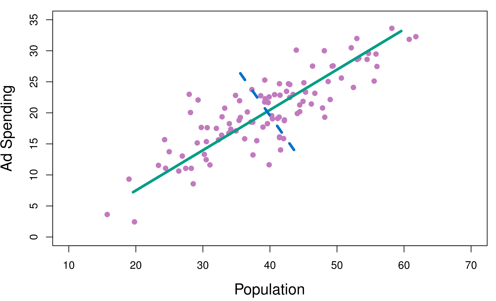
- Figure 6.14: Shows population size (pop) and ad spending (ad) for 100 cities.
- The green line is the first principal component direction.
- Projecting the observations onto this line would maximize the variance of the projected points.
PCA: Finding the First Principal Component
- Mathematical Representation: The first principal component can be written as:
\[ Z_1 = 0.839 \times (pop - \overline{pop}) + 0.544 \times (ad - \overline{ad}) \] (eq: 6.19)
- 0.839 and 0.544 are the *principal component loadings*.
- $\overline{pop}$ and $\overline{ad}$ are the means of pop and ad, respectively.- Interpretation: Z1 is almost an average of the two variables (since the loadings are positive and similar in size).
PCA: Principal Component Scores
\[ Z_{i1} = 0.839 \times (pop_i - \overline{pop}) + 0.544 \times (ad_i - \overline{ad}) \] (eq: 6.20)
- Scores: The values zi1, …, zn1 are called the principal component scores. They represent the “coordinates” of the data points along the first principal component direction.
PCA: Another Interpretation
- Closest Line: The first principal component vector defines the line that is as close as possible to the data (minimizing the sum of squared perpendicular distances).
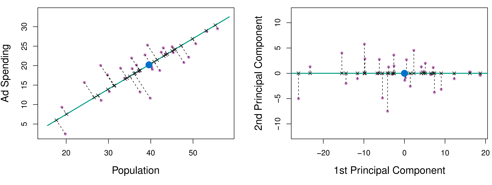
- Figure 6.15:
- Left: Shows the perpendicular distances from each point to the first principal component line.
- Right: Rotates the plot so that the first principal component is horizontal. The x-coordinate of each point in this rotated plot is its principal component score.
PCA: Capturing Information
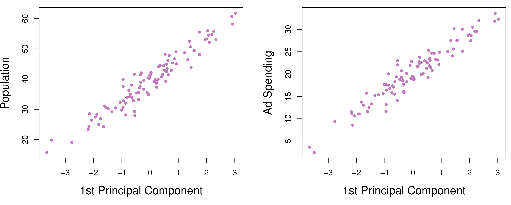
- Figure 6.16: Shows the first principal component scores (zi1) plotted against pop and ad.
- Strong Relationship: There’s a strong relationship, indicating that the first principal component captures much of the information in the original two variables.
PCA: Multiple Principal Components
More than One: You can construct up to p distinct principal components.
Second Principal Component: The second principal component (Z2) is:
- A linear combination of the variables.
- Uncorrelated with Z1.
- Has the largest variance among all linear combinations uncorrelated with Z1.
- Orthogonal (perpendicular) to the first principal component.
Successive Components: Each subsequent principal component captures the maximum remaining variance, subject to being uncorrelated with the previous components.
PCA: Second Principal Component
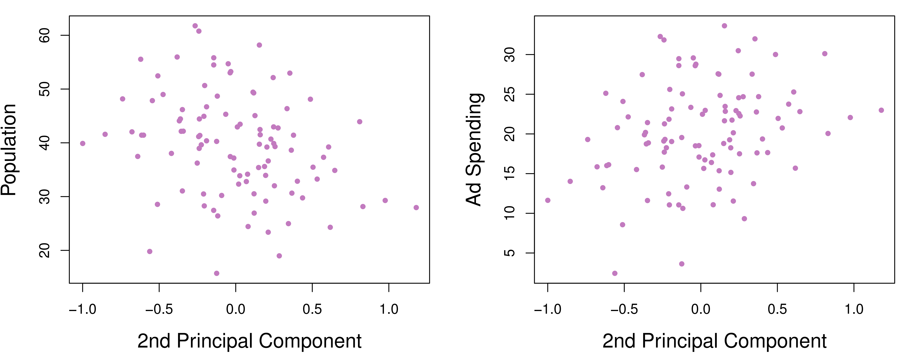
- Figure 6.17: Shows the second principal component scores (zi2) plotted against pop and ad.
- Weak Relationship: There’s very little relationship, indicating that the second principal component captures much less information than the first.
The Principal Components Regression Approach
The Idea: Use the first M principal components (Z1, …, ZM) as predictors in a linear regression model.
Assumption: We assume that the directions in which X1, …, Xp show the most variation are the directions that are associated with Y.
Potential for Improvement: If this assumption holds, PCR can outperform least squares, especially when M << p, by reducing variance.
PCR: Example
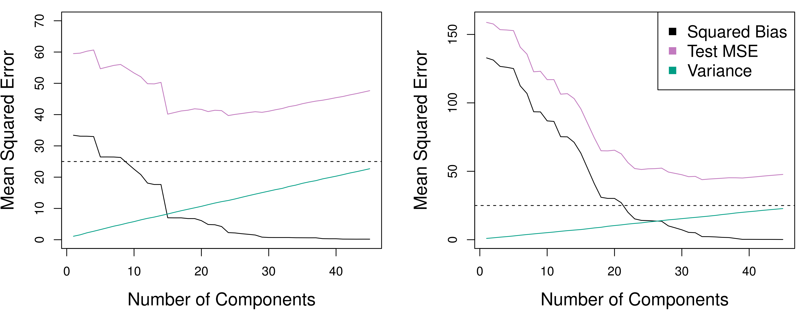
Figure 6.18: Shows PCR applied to the simulated datasets from Figures 6.8 and 6.9.
PCR with an appropriate choice of M can improve substantially over least squares.
However, in this example, PCR does not perform as well as ridge regression or the lasso. This is because the data were generated in a way that required many principal components to model the response well.
PCR: When it Works Well
- First Few Components are Key: PCR tends to work well when the first few principal components capture most of the variation in the predictors and the relationship with the response.
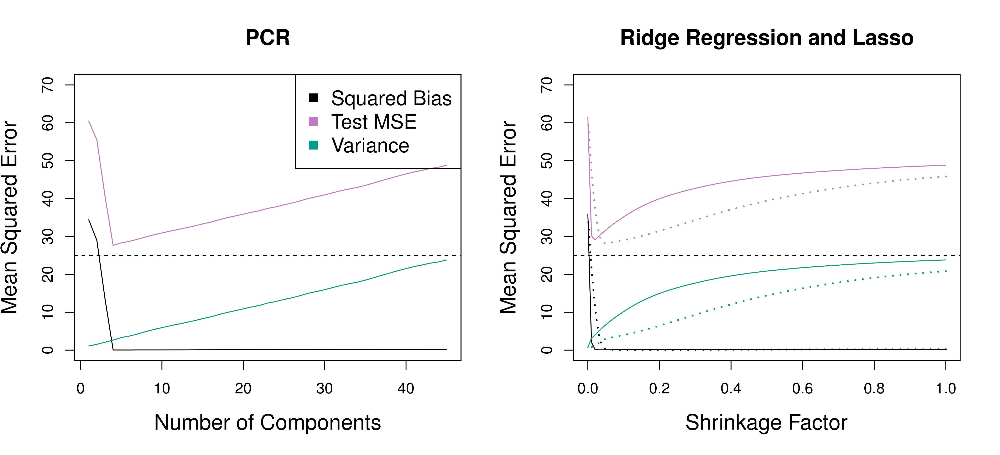
- Figure 6.19: Shows an example where the response depends only on the first five principal components.
- PCR performs very well, achieving a low MSE with M = 5.
- PCR and ridge regression slightly outperform the lasso in this case.
PCR: Not Feature Selection
Linear Combinations: PCR is not a feature selection method. Each principal component is a linear combination of all p original features.
Example: In the advertising data, Z1 was a combination of both pop and ad.
Relationship to Ridge Regression: PCR is more closely related to ridge regression than to the lasso.
PCR: Choosing M and Standardization
- Choosing M: The number of principal components (M) is typically chosen by cross-validation.
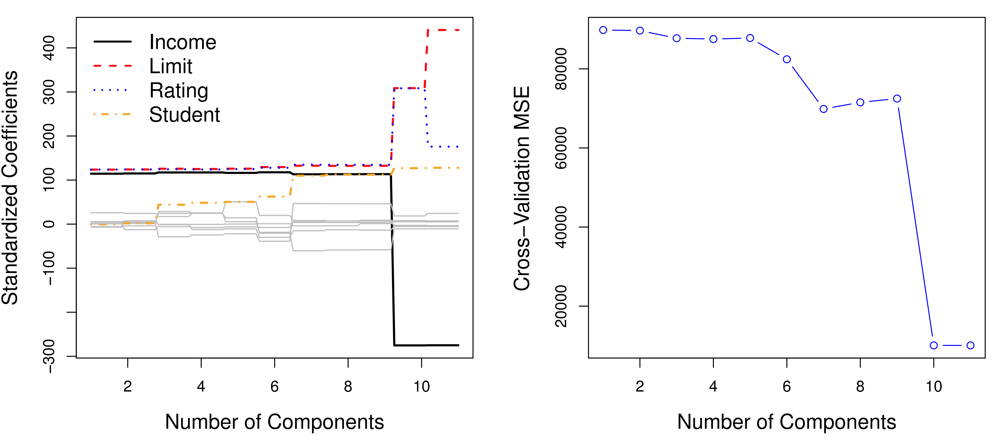
Figure 6.20: Shows cross-validation for PCR on the Credit data.
The lowest cross-validation error occurs with M = 10, which is almost no dimension reduction.
Standardization: It’s generally recommended to standardize each predictor before performing PCA. This ensures that all variables are on the same scale.
3.2 Partial Least Squares (PLS)
Supervised Dimension Reduction: PLS is a supervised dimension reduction technique. Unlike PCR (which is unsupervised), PLS uses the response (Y) to help identify the new features (Z1, …, ZM).
Goal: Find directions that explain both the response and the predictors.
PLS: Computing the First Direction
Standardize Predictors: Standardize the p predictors.
Simple Linear Regressions: Compute the coefficient from the simple linear regression of Y onto each Xj.
First PLS Direction: Set each φj1 in the equation for Z1 (Equation 6.16) equal to this coefficient. This means PLS places the highest weight on variables that are most strongly related to the response.
PLS: Example

- Figure 6.21: Shows the first PLS and PCR directions for a synthetic dataset with Sales as the response and Population Size and Advertising Spending as predictors.
- PLS chooses a direction that emphasizes Population Size more than Advertising Spending, because Population Size is more correlated with Sales.
PLS: Subsequent Directions
- Iterative Process:
- Adjust for Z1: Regress each variable on Z1 and take the residuals. This removes the information already explained by Z1.
- Compute Z2: Compute Z2 using these orthogonalized data, in the same way as Z1 was computed.
- Repeat: Repeat this process M times to identify multiple PLS components (Z1, …, ZM).
- Final Model: Fit a linear model using Z1, …, ZM as predictors, just like in PCR.
PLS: Tuning Parameter and Standardization
Choosing M: The number of PLS directions (M) is a tuning parameter, typically chosen by cross-validation.
Standardization: It’s generally recommended to standardize both the predictors and the response before performing PLS.
Performance: In practice, PLS often performs no better than ridge regression or PCR. The supervised dimension reduction of PLS can reduce bias, but it also has the potential to increase variance.
4. Considerations in High Dimensions
4.1 High-Dimensional Data
Low-Dimensional Setting: Most traditional statistical techniques are designed for the low-dimensional setting, where n (number of observations) is much greater than p (number of features).
High-Dimensional Setting: In recent years, new technologies have led to a dramatic increase in the number of features that can be measured. We often encounter datasets where p is large, possibly even larger than n.
Examples:
- Genomics: Measuring hundreds of thousands of single nucleotide polymorphisms (SNPs) to predict a trait.
- Marketing: Using all search terms entered by users of a search engine to understand online shopping patterns.
4.2 What Goes Wrong in High Dimensions?
- Least Squares Fails: When p is as large as or larger than n, least squares cannot be used (or should not be used).
- Perfect Fit, But Useless: Least squares will always find a set of coefficients that perfectly fit the training data (zero residuals), regardless of whether there’s a true relationship between the features and the response.
- Overfitting: This perfect fit is a result of overfitting. The model is too flexible and captures noise in the data, leading to terrible performance on new data.
- Curse of Dimensionality: Adding more features, even if unrelated to response, can easily lead to the model overfitting the training data.
4.3 Regression in High Dimensions
- Less Flexible Methods: Many of the methods we’ve discussed in this chapter – forward stepwise selection, ridge regression, the lasso, and PCR – are particularly useful in the high-dimensional setting.
- Avoiding Overfitting: These methods avoid overfitting by being less flexible than least squares.
Regression in High Dimensions: Example with the Lasso
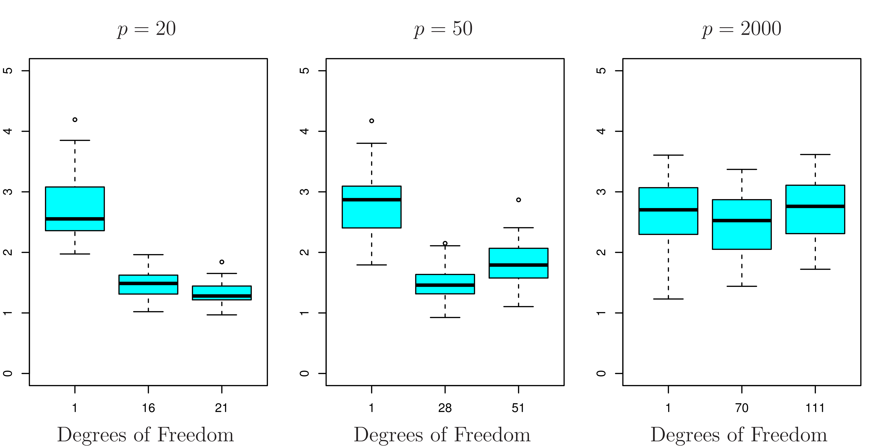
Figure 6.24: Lasso with n=100, p can be 20, 50 and 2000.
As the number of features increases, the test set error increases, highlights the curse of dimensionality.
Three Key Points:
- Regularization is Crucial: Regularization (or shrinkage) is essential in high-dimensional problems.
- Tuning Parameter Selection: Choosing the right tuning parameter (e.g., λ for the lasso) is critical for good performance.
- Curse of Dimensionality: The test error tends to increase as the dimensionality of the problem increases, unless the additional features are truly associated with the response.
4.4 Interpreting Results in High Dimensions
Multicollinearity is Extreme: In the high-dimensional setting, multicollinearity is extreme. Any variable can be written as a linear combination of all the other variables.
Cannot Identify True Predictors: This means we can never know exactly which variables (if any) are truly predictive of the outcome. We can only identify variables that are correlated with the true predictors.
Caution in Reporting: Be very cautious when reporting results. Don’t overstate conclusions.
Never Use Training Data for Evaluation: Never use training data measures (sum of squared errors, p-values, R2) as evidence of a good model fit in the high-dimensional setting. These measures will be misleadingly optimistic.
Use Test Data or Cross-Validation: Always report results on an independent test set or using cross-validation.
Summary
Beyond Least Squares: We’ve explored several alternatives to least squares for linear regression:
- Subset selection (best subset, forward stepwise, backward stepwise)
- Shrinkage methods (ridge regression, the lasso)
- Dimension reduction methods (PCR, PLS)
Goals: These methods aim to improve:
- Prediction accuracy (by reducing variance, often at the cost of a small increase in bias)
- Model interpretability (by selecting a subset of variables or shrinking coefficients)
High-Dimensional Data: These methods are particularly important in the high-dimensional setting (p ≥ n), where least squares fails.
Cross-Validation: Cross-validation is a powerful tool for selecting tuning parameters and estimating the test error of different models.
The choice of modeling method, the choice of tuning parameter, and the choice of assessment metrics all become especially important in high dimensions.
Thoughts and Discussion
Think about situations where you might encounter high-dimensional data. What are the challenges and opportunities?
How would you choose between the different methods we’ve discussed (subset selection, ridge regression, the lasso, PCR, PLS)? What factors would you consider?
What are the ethical implications of using high-dimensional data for prediction, especially in sensitive areas like healthcare or finance? How can we mitigate potential biases and ensure fairness?